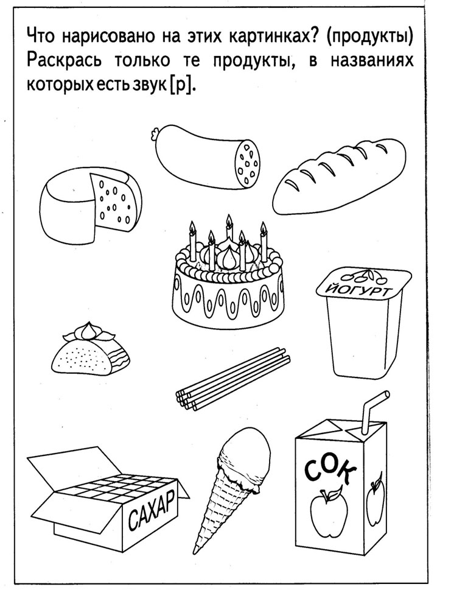

 ×
Disclaimer
All information on IslamicFinder.org is verified by professionals beforehand. If you find any inappropriate material (or links leading to inappropriate materials), kindly contact us.
× × LOCATION Auto location PRAYER CALCULATION Reset Save & Update English English العربية Français Türkçe Bahasa Indonesia Bahasa Malay Español | Login Download App Home Calendar Al Quran Ramadan 2021 Prayer Times Date Converter MuslimsFeatures and Tools
Hadith Knowledge Duas Islamic Places IslamicFinder News Ramadan Calendar 2021 Islamic Gallery Zakat Calculator Qibla Direction PrayerBook Prayer WidgetsSpecial Events
Special Islamic Days 30 deeds challengeContact Us
Talk to us Advertise with us LoginLanguages
English العربية Français Türkçe Español Bahasa Indonesia Bahasa Malay Download AthanDownload our iOS app
for faster experience and daily updates.
×Download our Android app
for faster experience and daily updates.
× × Home Prayer Times Ramadan 2021 Ramadan Calendar 2021 Islamic Calendar 2021 Al Quran Hadith Muslims Duas Special Islamic Days 30 deeds challenge Qibla Direction Date Converter Knowledge Islamic Gallery Islamic Places Prayerbook Zakat Calculator IslamicFinder News Talk to us Download AthanRead Surah Ala with Russiantranslation by Abu Adel
Home Al Quran Surah Ala Read Surah Ala with Russiantranslation by Abu AdelJuz
30- Amma Yatasa'aloon 1- Alaf Lam Meem 2- Sayaqool 3- Tilkal Rusull 4- Lan Tana Loo 5- Wal Mohsanat 6- La Yuhibbullah 7- Wa Iza Samiu 8- Wa Lau Annana 9- Qalal Malao 10- Wa A'lamu 11- Yatazeroon 12- Wa Mamin Da'abat 13- Wa Ma Ubrioo 14- Rubama 15- Subhanallazi 16- Qal Alam 17- Aqtarabo 18- Qadd Aflaha 19- Wa Qalallazina 20- A'man Khalaq 21- Utlu Ma Oohi 22- Wa Manyaqnut 23- Wa Mali 24- Faman Azlam 25- Elahe Yuruddo 26- Ha'a Meem 27- Qala Fama Khatbukum 28- Qadd Sami Allah 29- Tabarakallazi 30- Amma Yatasa'aloonSurahs
Surah Ala 1-Surah Fatiha 2- Surah Baqarah 3- Surah Imran 4- Surah Nisa 5- Surah Maidah 6- Surah Anam 7- Surah Araf 8- Surah Anfal 9- Surah Taubah 10- Surah Yunus 11- Surah Hud 12- Surah Yusuf 13- Surah Raad 14- Surah Ibrahim 15- Surah Hijr 16- Surah Nahl 17- Surah Isra 18- Surah Kahf 19- Surah Maryam 20- Surah Taha 21- Surah Anbiya 22- Surah Hajj 23- Surah Muminun 24- Surah Noor 25- Surah Furqan 26- Surah Shuara 27- Surah Naml 28- Surah Qasas 29- Surah Ankabut 30- Surah Rum 31- Surah Luqman 32- Surah Sajdah 33- Surah Ahzab 34- Surah Saba 35- Surah Fatir 36- Surah Yaseen 37- Surah Saffat 38- Surah Sad 39- Surah Zumar 40- Surah Ghafir 41- Surah Fussilat 42- Surah Shura 43- Surah Zukhruf 44- Surah Dukhan 45- Surah Jathiyah 46-Ahqaf 47- Surah Muhammad 48- Surah Fath 49- Surah Hujurat 50- Surah Qaf 51- Surah Dhariyat 52- Surah Tur 53- Surah Najm 54- Surah Qamar 55- Surah Rahman 56- Surah Waqiah 57- Surah Hadid 58- Surah Mujadila 59- Surah Hashr 60- Surah Mumtahana 61- Surah Saff 62- Surah Jumah 63- Surah Munafiqoon 64- Surah Taghabun 65- Surah Talaq 66- Surah Tahrim 67- Surah Mulk 68- Surah Qalam 69- Surah Haqqah 70- Surah Maarij 71- Surah Nuh 72- Surah Jinn 73- Surah Muzammil 74- Surah Mudathir 75- Surah Qiyamah 76- Surah Insan 77- Surah Mursalat 78- Surah Naba 79- Surah Naziat 80- Surah Abasa 81- Surah Takwir 82- Surah Infitar 83- Surah Mutaffifin 84- Surah Inshiqaq 85- Surah Burooj 86- Surah Tariq 87- Surah Ala 88- Surah Ghashiya 89- Surah Fajr 90- Surah Balad 91- Surah Shams 92- Surah Layl 93- Surah Duha 94- Surah Sharh 95- Surah Teen 96- Surah Alaq 97- Surah Qadr 98- Surah Bayyinah 99- Surah Zalzalah 100- Surah Adiyat 101- Surah Qariah 102- Surah Takathur 103- Surah Asr 104- Surah Humazah 105- Surah Feel 106- Surah Quraish 107- Surah Maun 108- Surah Kauthar 109- Surah Kafiroon 110- Surah Nasr 111- Surah Masad 112- Surah Ikhlas 113- Surah Falaq 114- Surah Nas Al Quran Translation×
| Load Previous Ayaat Sorry, couldn't find any ayaat matching your search query/word. 87:1سَبِّحِ ٱسْمَ رَبِّكَ ٱلْأَعْلَى
Sabbi h i isma rabbika alaAAl a
Славь имя Господа твоего Высочайшего! [Произноси и вспоминай имя Аллаха только возвеличивая и восславляя Его и никого не называй Его именем, и не произноси имя Его насмехаясь и шутя.] 87:2ٱلَّذِى خَلَقَ فَسَوَّىٰ
Alla th ee khalaqa fasaww a
Который сотворил (все творения) и затем соразмерил [придал всему соразмеренность], 87:3وَٱلَّذِى قَدَّرَ فَهَدَىٰ
Wa a lla th ee qaddara fahad a
Который определил (то, что пожелал для того, кому пожелал) и затем направил (его к тому, что Он определил для него) 87:4وَٱلَّذِىٓ أَخْرَجَ ٱلْمَرْعَىٰ
Wa a lla th ee akhraja almarAA a
и Который вывел пастбище [взрастил травы и другие растения], 87:5فَجَعَلَهُۥ غُثَآءً أَحْوَىٰ
FajaAAalahu ghuth a an a h w a
и затем Он сделал его сухим сором [Он делает так, что растения увядают и высыхают]! 87:6سَنُقْرِئُكَ فَلَا تَنسَىٰٓ
Sanuqrioka fal a tans a
Мы внушим тебе (о, Пророк) чтение (Корана), и ты (его) не забудешь, 87:7إِلَّا مَا شَآءَ ٱللَّهُ إِنَّهُۥ يَعْلَمُ ٱلْجَهْرَ وَمَا يَخْفَىٰ
Ill a m a sh a a All a hu innahu yaAAlamu aljahra wam a yakhf a
кроме только того, что пожелает Аллах (чтобы ты забыл) – поистине, Он [Аллах] знает явное [речи и деяния] и то, что скрыто [сокровенное]! 87:8وَنُيَسِّرُكَ لِلْيُسْرَىٰ
Wanuyassiruka lilyusr a
И Мы облегчим тебе (о, Пророк) к легчайшему [облегчим все благие дела] 87:9فَذَكِّرْ إِن نَّفَعَتِ ٱلذِّكْرَىٰ
Fa th akkir in nafaAAati a l thth ikr a
Напоминай же [увещевай] (Кораном), если полезно напоминание. 87:10سَيَذَّكَّرُ مَن يَخْشَىٰ
Saya thth akkaru man yakhsh a
(Ведь) внемлет (увещание Кораном) тот, кто испытывает страх (перед Аллахом). Load More ×Welcome to Quran
Explore "Settings" to adjust Quran to your liking
Scroll and select any surah of your choice
Spotted an issue? Report it
IslamicFinder brings Al Quran to you making the Holy Quran recitation a whole lot easier. With our Al Quran explorer feature, just with a tap, you can select the Surah you want to recite or listen Quran mp3 audio! Offering your Holy Quran Translation and Quran Transliteration in English and several other languages, Quran recitation has never been easier. Happy reading! Surah Yaseen Ayat al Kursi Surah Rehman Surat Mulk Surah Kahf Surah Baqara Surah Fatiha × Style Font Theme Translation Arabic | تفسير الجلالين Arabic | تفسير المیسر Bengali | জহুরুল হক Bengali | মুহিউদ্দীন খান Bosnian | Mlivo Chinese | Ma Jian Chinese | Ma Jian (Traditional) Czech | Hrbek Czech | Nykl Dutch | Keyzer English | Daryabadi English | Hilali & Khan English | Pickthall English | Saheeh International French | Hamidullah German | Abu Rida German | Bubenheim & Elyas German | Khoury German | Zaidan Hindi | फ़ारूक़ ख़ान & अहमद Hindi | फ़ारूक़ ख़ान & नदवी Indonesian | Bahasa Indonesia Indonesian | Quraish Shihab Indonesian | Tafsir Jalalayn Italian | Piccardo Malay | Basmeih Malayalam | അബ്ദുല് ഹമീദ് & പറപ്പൂര് Malayalam | കാരകുന്ന് & എളയാവൂര് Norwegian | Einar Berg Pashto | عبدالولي Russian | Абу Адель Russian | Аль-Мунтахаб Russian | Кулиев Sindhi | امروٽي Somali | Abduh Spanish | Garcia Swedish | Bernström Tamil | ஜான் டிரஸ்ட் Thai | ภาษาไทย Turkish | Abdulbakî Gölpınarlı Turkish | Alİ Bulaç Turkish | Çeviriyazı Turkish | Diyanet İşleri Turkish | Süleyman Ateş Urdu | ابوالاعلی مودودی Urdu | جالندہری Urdu | محمد جوناگڑھی Uyghur | محمد صالح Uzbek | Мухаммад Содик Transliteration Help Report - Your browser doesn't support audio player... QURAN AUDIO SURAH Surahs QARI ABDUL RAHMAN AL-SUDAIS 00:00 / 00:00 Surah Surahs QARI ABDUL RAHMAN AL-SUDAIS FeedbackContact Us
Contact Us
Thanks for reaching out. We'll get back to you soon.Our new privacy policy
XWe have updated our privacy policies according to CCPA and GDPR rules and regulations for Californian and EU citizens respectively. If you continue using our website, then you have agreed to our Terms of Use and Privacy Policy.
Got it Or More Info STAY ON TOP OF YOUR SALAH Download Athan Learn More Home Duas Prayer Times Islamic Places Qibla Direction World Features Calendar Al Quran Hadith Islamic Days Date Converter Islamic Gallery Knowledge Products Athan Inspirations Tasbeeh Prayer Widgets Ramadan 2021 Hajj 2021 About IslamicFinder News Advertise with us Talk to us IslamicFinder © 2021. All rights reserved.
Read our Terms and Conditions and Privacy Policies
Follow IslamicFinder
SUBSCRIBE TO NEWSLETTER
Subscribe to our e-newsletter today and receive latest news and updates about our products. No, Thanks ×Insert your coordinates
×Improve your location’s accuracy
Sometimes we might have trouble finding where you are located. Having your current location will help us to get you more accurate prayer times and nearby Islamic places. Here are some things you can do to help fix the problem.
Chrome Safari Android iOS In the top right, click More Click Settings and then Show advanced settings. In the "Privacy" section, click Content settings. In the dialog that appears, scroll down to the "Location" section. Select one of these permissions: Allow all sites to track your physical location: Select this option to let all sites automatically see your location. Ask when a site tries to track your physical location: Select this option if you want Google Chrome to alert you whenever a site wants to see your location. Do not allow any site to track your physical location: Select this option if don't want any sites to see your location. Click Done. Open System Preferences and then Security & Privacy Preferences and then Privacy and then Location Services. To allow for changes, click the lock in the bottom left. Check "Enable Location Services." Turn on location On your phone or tablet, open the Settings app. Tap Location. At the top, switch location on. Tap Mode and then High accuracy. If you still get an error when you open IslamicFinder, follow the step 2. Open Chrome In the top right, tap More Tap Settings . Under "Advanced", tap Site Settings Tap Location . If you see a toggle, make sure it turned on and blue. If you see "Location access is turned off for this device," tap the blue words > on the next Settings screen, tap the toggle to turn on location access. If you see "blocked" under "Location," tap Blocked > tap IslamicFinder > Clear & reset . Open IslamicFinder in your mobile browser and refresh the web page If you're using a browser other than Chrome, visit your browser's help center by visiting their website. Turn on location Open Settings app. Tap Privacy > Location Services > Safari Websites . Under "Allow Location Access," tap While Using the app. Give current location access on your browser Safari Open settings app. Tap General > Reset . Tap Reset Location & Privacy . If prompted, enter your passcode. You will see a message that says "This will reset your location and privacy settings to factory defaults." Tap Reset Settings . Open Safari Go to IslamicFinder To give Safari access to your location, tap Allow or OK To give IslamicFinder access to your location, tap OK If you are using a browser other than Safari, visit your browser's help center by visiting their website. ×